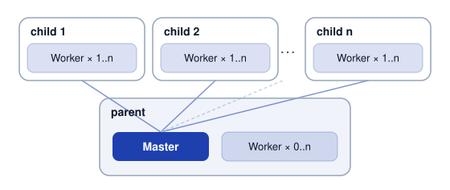
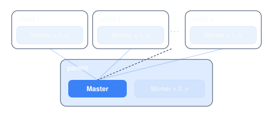

DistSSHKit.jl
DistSSHKit is a toolkit for running Julia computations across multiple machines over SSH. It works equally well for a pair of workstations and for a larger set of lab machines. Supported on macOS, Linux, and WSL2 Ubuntu (not native Windows).
pkg> add DistSSHKit is all you need to install it. The command is julia -m DistSSHKit. DistSSHKit bundles DistSSHRun and DistSSHQueue. You do not install them separately.
A job runs in one of two places.
- This machine. Start it here. The SSH connection stays open until it finishes.
- Queue host. An always-on machine. Leave the job there. Jobs run one at a time. A dropped laptop does not stop a job already left there.
qhostnames that machine.
Prepare hosts is shared by both. setup prepares SSH hosts. up puts the same Julia channel on each machine. Do that before you start.
What is DistSSHKit?
On this machine, three ways to run a script:
- Same script on each machine (
go) — each host runs your.jlend to end. Prefer when every run is already a complete job. - Split map / filter (
ride) — experimental split ofmap,filter, and simple comprehensions. - One machine coordinates (
drive) — the main process farms work to the others ([Distributed.jl][dist-jl]).
Match Julia versions with up before you start. Remote project setup, sync, and collecting outputs are the same from the terminal or from Julia / notebooks.
Call paths:
- Julia API —
setup!for remotes,go!/drive!to run, orpipeline!for optional sync →drive!→ collect (notsetup!; rsync there does not instantiate). Occupancy is CLIsizeand Juliasize!; paste the printed tokens. - CLI —
julia --project=. -m DistSSHKit go …/ride …/drive …/plan …(andsetup,demo, …)
All of these need Julia 1.13+ (Requirements).
Same host tokens for setup / go / drive / ride / size / pool (parent:2, child:user@host:1; setup / size / pool ignore :N). Details: API, User Guide.
Installation
From the Julia REPL, type ] to enter the Pkg REPL mode and run:
pkg> add DistSSHKitOr: import Pkg; Pkg.add("DistSSHKit").
Also needs ssh, rsync, and git (git deploy only); pkg> add does not install them. Requirements.
Basic terms
- Host — a machine, given as a token like
parentorchild:user@hostname. - Process — one
juliaOS process with its own memory. A run may start several per host (Distributed.jl). - The machine the run starts from — this machine when you run
go/drivehere, and the queue host when the job was left there. - Master — the process on the machine the run starts from. It plans slots (
go) or farms work to workers (drive) and collects results. - Worker — a process that receives work from the master and runs it.
Example: running go / drive on your machine makes that machine the one the job started from. Each host can run several workers (including zero on this machine). Remotes are optional.


The diagram is drive. One master on the machine the run starts from, workers on each host. go uses the same host tokens, but there is no master/worker: each host runs the script on its own.
parent # this machine
parent:2 # two on this machine
child:user@hostname # SSH child (user@host, IP, or Host alias)
child:user@hostname:4 # four on that childNo hard limit on SSH hosts; more remotes means more SSH and deploy time — start with a few. Each SSH host needs:
- Passwordless SSH from the machine the run starts from
- Julia with the same major.minor version as that machine (
setup --checkverifies this). Match the channel withupfirst.
Details: Requirements.
Next
Start at Requirements.
On this machine: Prepare and the bundled Demo, then setup, go, ride, and drive.
On a queue host: Prepare the machine, then First job.
Or the API to embed from Julia. The rest of the User Guide lists every command.
Contributing
Bugs and feature requests: Issues. Questions and ideas: Discussions. See [CONTRIBUTING.md][contrib] for how to contribute.
License
Source code is [MIT][mit-lic].
[contrib]: https://github.com/yamanori99/DistSSHKit.jl/blob/main/CONTRIBUTING.md [mit-lic]: https://github.com/yamanori99/DistSSHKit.jl/blob/main/LICENSE [dist-jl]: https://docs.julialang.org/en/v1/manual/distributed-computing/